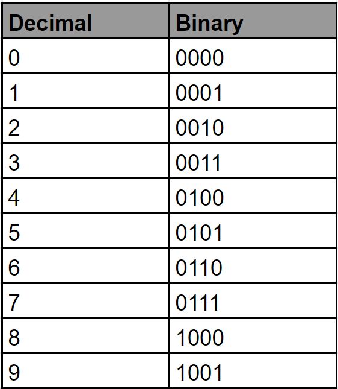
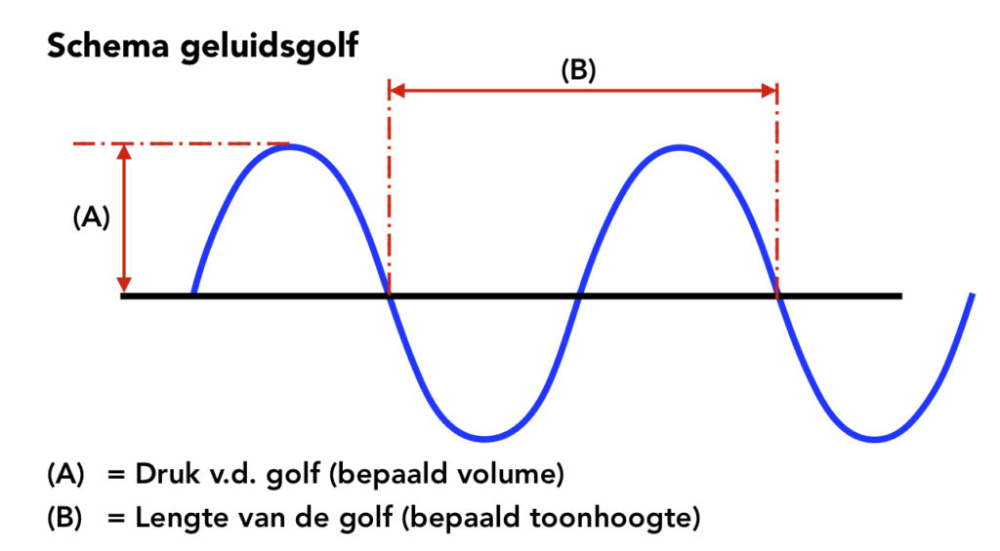

Het binair stelsel is een positiestelsel,
waarin rijen van de cijfers 0 en 1 een getal voorstellen. De cijfers zoals 0 en 1 staan
bekend als "bits", ook wel binary digits (binaire cijfer) genoemd. Het binaire stelsel
staat bekend om de posities waarbij de machten gelijk staan aan 2. Een interessant
voorbeeld hiervan is 0100 (in een 4-bit systeem), wat 4 voorstelt. De minimale binaire
vorm hiervan is 100, omdat voorloopnullen (zoals bij 0100) optioneel zijn in binaire
getallen - er zijn namelijk geen hogere bits nodig. "0100" is technisch hetzelfde getal,
maar met een vaste extra nul vooraan. Dit wordt vaak gebruikt in systemen met een vaste
bitlengte, zoals 4-bit, 8-bit en 16-bit. Een byte bestaat uit 8 bits en kan bijvoorbeeld
als "01001101" worden aangeduid. Deze reeks kan een letter, geluid, kleur of iets anders
voorstellen. In netwerken meten we met bits per seconde (bps) en in opslag meten we capaciteit
met kilobits (Kb), megabits (Mb), gigabits (Gb) of terabits (Tb). Het zal je misschien
verrassen, want één 1 terabit = 1.000.000.000.000 bits (oftewel 1012) bits.
Hieronder is een afbeelding te zien van diverse getallen die je met deze handige rijen
kan maken. Ga met je muis over de tabel om de getallen duidelijker te bekijken!

Hoe gebruik je het binair stelsel?
Het binair stelsel, bestaande uit de cijfers 0 en 1, wordt voornamelijk gebruikt door computers. Computers werken met dit stelsel, omdat ze alleen twee vormen kennen: aan (1) en uit (0). Alles wat een computer doet, zoals rekenen en het opslaan van teksten, beeld en geluid, gebeurt met combinaties van deze twee simpele cijfers. Om een gewoon getal om te zetten tot binair, deel je het getal steeds opnieuw door 2 en noteer je de rest. Een voorbeeld hiervan staat onderaan.
Van 18 naar binair:
18 ÷ 2 = 9 -> rest 0
9 ÷ 2 = 4 -> rest 1
4 ÷ 2 = 2 -> rest 0
2 ÷ 2 = 1 -> rest 0
1 ÷ 2 = 0 -> rest 1
Lees de resten van onder naar boven: 10010.
Ben je benieuwd naar het volledige binaire stelsel? Deze staat onderaan de pagina!
Tekst opslaan
Elke letter, cijfer of teken heeft een unieke
ASCII-code.
Deze code is een getal dat uiteindelijk wordt omgezet
in binaire vorm. De letter "A" heeft bijvoorbeeld de speciale ASCII-code 65, wat binair
"01000001" is. Op deze handige manier kan een computer teksten herkennen, opslaan en
weergeven.
Afbeeldingen opslaan
Een digitale afbeelding bestaat uit verschillende pixels. Elke pixel heeft een eigen
kleurwaarde, zoals in RGB. Deze kleurwaarden worden omgezet in binaire getallen.
Hoe meer pixels en hoe meer kleurdiepte er zijn, hoe meer binaire data hiervoor nodig is.

Geluid opslaan
Geluidsgolven worden digitaal opgeslagen door ze te "samplen": op vaste
tijdsintervallen wordt de hoogte van de golf gemeten en genoteerd. Elke golfmeting
wordt omgezet in een getal, dat getal wordt daarna binair opgeslagen. Hierdoor
ontstaat een digitaal geluidsbestand zoals een MP3 of WAV, handig!
Bruikbaarheid
Het binair stelsel wordt gebruikt in de infromatica, omdat het belangrijke functies heeft:
Betrouwbaar: elektronische schakelingen kunnen heel makkelijk schakelen tussen aan en uit.
Efficiënt: je hebt maar twee symbolen nodig om complexe berekeningen en gegevens op te bouwen.
Universeel: alle digitale apparaten (wereldwijd) gebruiken dit systeem
Door het binair stelsel kunnen computers informatie verwerken, opslaan en doorgeven. Het vormt de basis van alle digitale technologie.
Ben je benieuwd naar de werking van het binair stelsel? Hier beneden staat het spel "Binary Bonanza", waar je binaire getallen mee kan vormen!